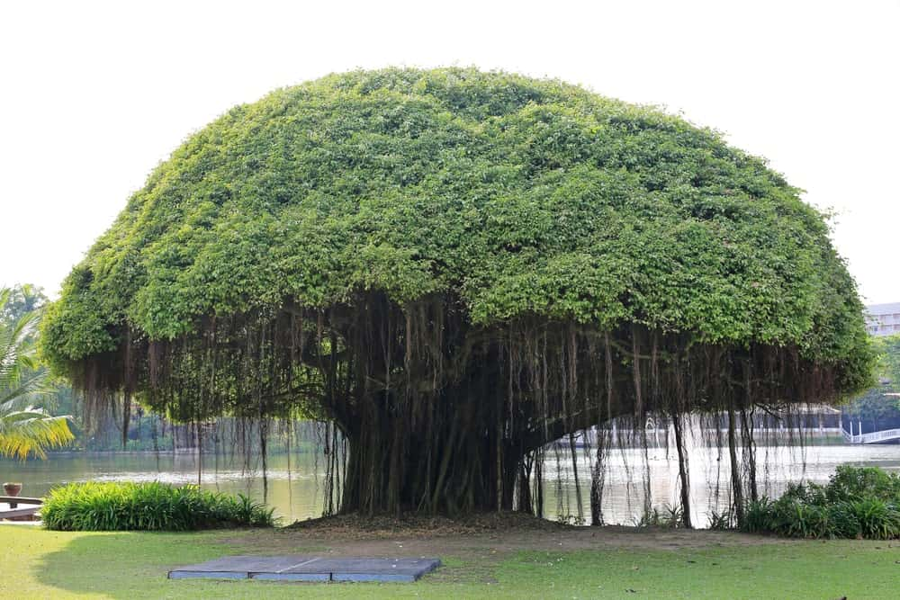
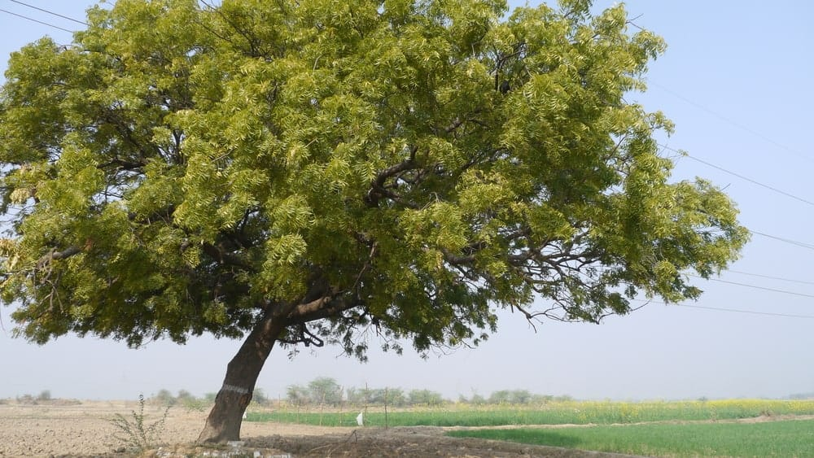
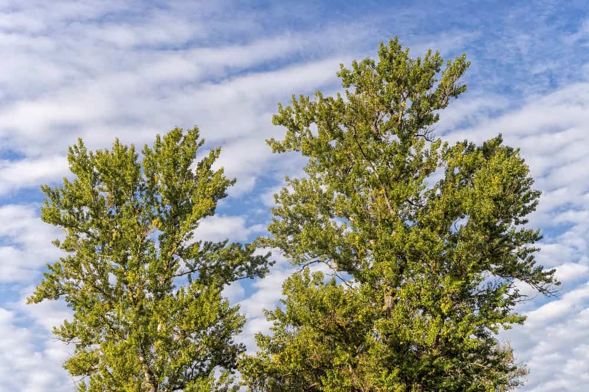

Below there are pictures of different trees with their names and a description of their qualities.
|  | Banyan Tree A banyan tree is a huge, evergreen tree, commonly found in countries around Asia and it is the national tree of India. It grows in a special type of soil which provides it with the nutrients it needs in orde r to grow and develop. |
|---|---|
|  | Neem Tree A neem tree is an evergreen, fast growing tree that is commonly found in Asia (especially south and Southeast Asia). In these nations, it is considered a household staple. The trunk of the neem tree is straight and rough, reaching the height of almost 100 feet. |
|  | Basswood A basswood tree is a medium sized deciduous tree that is commonly found in North America. Since this tree grows quite rapidly, it is often used for its high quality lumber. Although, this tree grows the best in moist, deep soils, it can do well in other types of soils as well. The wood of the tree is evenly grained, soft, light, but strong. |